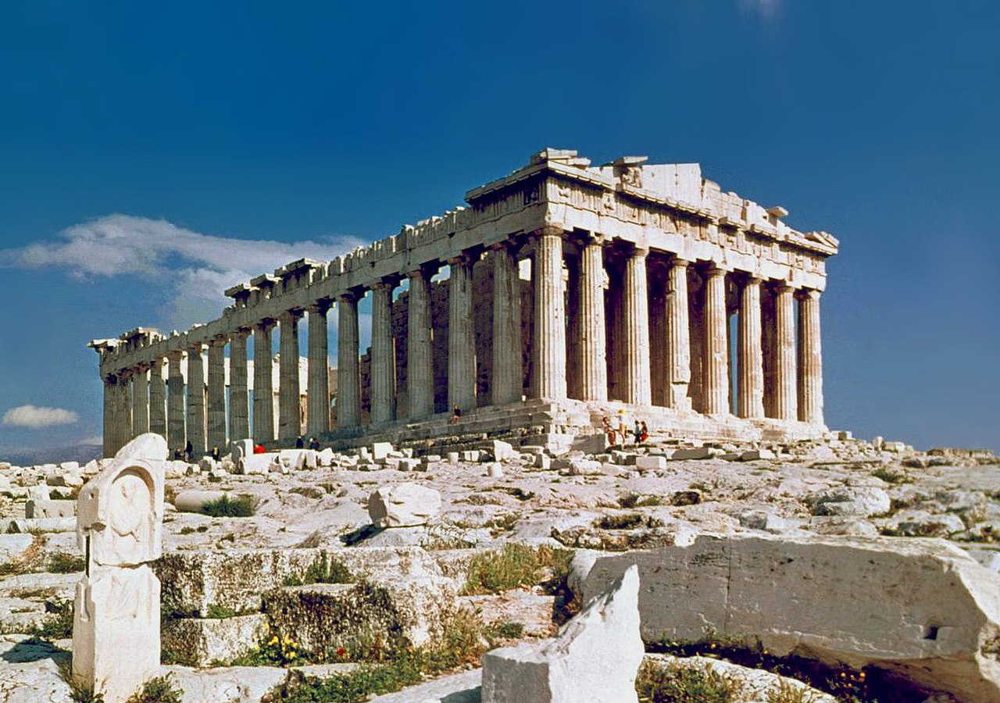

The Ancient World
Before concrete and glass, before the arch and the dome, humanity raised monuments of breathtaking ambition from bare stone and slave labor. These first great buildings defined what architecture could be: testimony to power, cosmology made tangible, permanence wrested from impermanent lives.
2560 BCE
Monuments to Eternity
Egyptian architecture is defined by its pursuit of immortality — massive, permanent, and oriented to the cosmos. The Great Pyramid of Giza, built around 2560 BCE, aligned to true north with a precision unmatched for millennia, remained the world's tallest structure for 3,800 years.
The characteristic forms — the pyramid, the obelisk, the hypostyle hall — all express the Egyptian concept of Ma'at: divine order made manifest in stone. Columns were carved as bundled papyrus reeds or lotus flowers, and every surface bore hieroglyphic text that doubled as protective magic.
- Great Pyramid: 2.3 million stone blocks, avg 2.5 tons each
- Karnak Temple Complex: 25 centuries of continuous construction
- Abu Simbel temples aligned so sunlight illuminates inner sanctum twice yearly
- Limestone, sandstone, and granite — no mortar in major structures

Ancient GreeceGreek Architecture
The Canon of Beauty · 800–31 BCE
Greek architecture established the proportional canon that Western building would worship for 2,500 years. The Parthenon (447–432 BCE) is not perfectly straight — its columns lean inward, its stylobate curves upward — all optical corrections to make the building appear flawlessly regular to the human eye.
The three Orders — Doric (sturdy, no base), Ionic (scroll capitals), and Corinthian (acanthus leaves) — became the vocabulary of classical architecture worldwide. Every column diameter, spacing, and entablature height was calculated as a mathematical ratio.
 Ancient Rome
Ancient Rome
Roman Architecture
Engineering the Empire · 509 BCE–476 CE
Rome transformed Greek aesthetics into an engineering civilization. The invention of concrete (opus caementicium) liberated builders from stone's tyranny, enabling the Pantheon's 43-meter unreinforced dome — the largest in the world until the Renaissance, and still the largest unreinforced concrete dome ever built.
The arch and the vault let Romans span vast spaces: amphitheaters seating 80,000 (the Colosseum), basilicas, thermae, and the Pont du Gard aqueduct still standing two millennia later.
The Pantheon
Temple to All Gods · 125 CE · Rome
Emperor Hadrian's greatest architectural achievement is a perfect sphere inscribed in a cylinder: the interior diameter equals the height from floor to oculus — exactly 43.3 meters. The 9-meter circular skylight is the sole source of natural light and functioned as a solar calendar, bathing the altar in light on specific feast days.
Its coffered concrete dome — lighter toward the apex where pumice replaces heavy travertine — remains an engineering miracle. Every pope from Urban VIII onward stripped bronze from the portico; yet it has been in continuous use for 1,900 years.
Persian Architecture
The Achaemenid Empire · 550–330 BCE
Darius the Great's Persepolis (518–330 BCE) synthesized the arts of conquered peoples — Egyptian, Babylonian, Greek, and Lydian — into a confident imperial style. The Apadana audience hall featured 72 columns supporting a vast timber roof, each 20 meters tall, accessed by processional staircases carved with tribute-bearers in intricate relief.
Persian architects introduced the hypostyle hall — a forest of columns supporting a flat roof — that would influence Islamic architecture for a millennium. Glazed brick friezes in electric blue and gold depicted the Immortals, the elite royal guard.